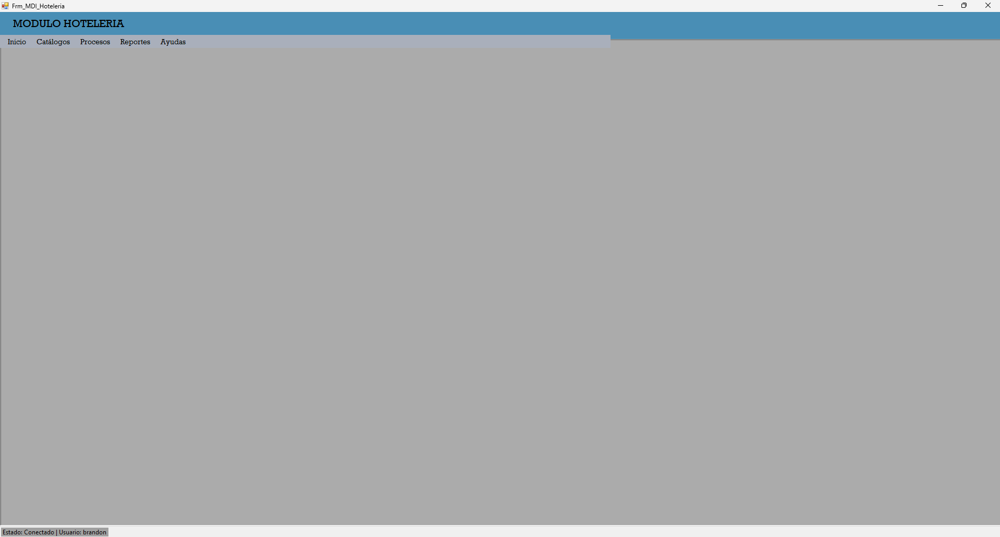

En el MDI encontramos las opciones principales con las que cuenta el sistema. Cada opción permitirá realizar una serie de actividades las cuales tienen como objetivo hacer que el sistema sea fácil de utilizar.
En la opción de Mantenimientos encontraremos los distintos formularios que nos permitirán administrar los mantenimientos maestros del sistema
En la opción de Procesos encontraremos los distintos formularios que nos permitirán administrar los mantenimientos transaccionales del sistema
Aqui se pueden ver los reportes de folio y el cierre diario
La opción de ayuda tiene la finalidad de dar a conocer el funcionamiento correcto del sistema. Esto con el fin de proporcionar una herramienta que solucione las dudas del usuario relacionadas al sistema.
